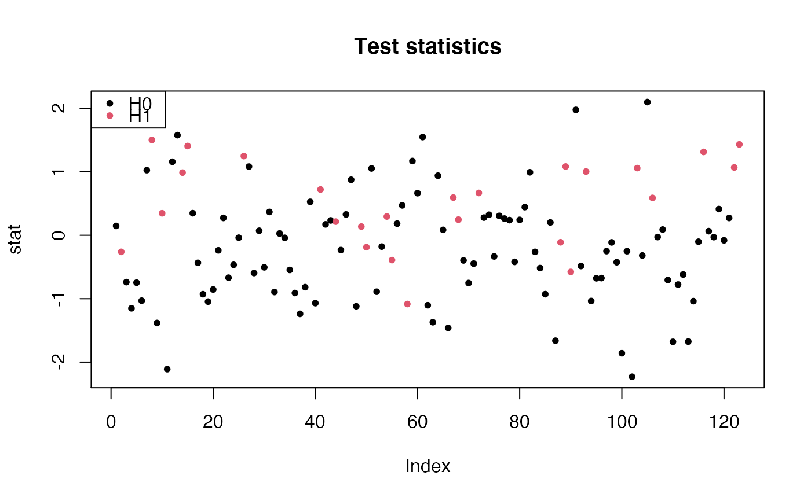

Simulate Gaussian test statistics
gaussianTestStatistics(
m,
B,
pi0 = 1,
SNR = 0,
dep = c("equi", "Toeplitz"),
param = 0
)Number of hypotheses
Number of simulations
Proportion of true null hypotheses
Signal to noise ratio. Either a numeric value (a measure of
distance between H0 and H1) or a vector of length m*(1-pi0)
A character value, the type of dependency between test statistics. Can be one of "equi" for equi-correlation, or "Toeplitz". Defaults to "equi".
A numeric value defaulting to 0. If dep=="equi", param is the level of equi-correlation between pairs of variables. If dep=="Toeplitz", the first row of the Toeplitz matrix will be (1:m)^(param).
A list with elements
A vector of length \(m\) test statistics
An \(m x B\) matrix of test statistics under the null hypothesis
A vector of length \(m\), the status of each hypothesis: 0 for true null hypothesis, and 1 for true alternative hypothesis
B
m <- 123
B <- 100
# independent statistics under the full null
sim <- gaussianTestStatistics(m, B)
# equi-correlated statistics under the full null
sim <- gaussianTestStatistics(m, B, dep = "equi", param = 0.2)
# equi-correlated statistics with some signal
sim <- gaussianTestStatistics(m, B, pi0 = 0.8, SNR = 1, dep = "equi", param = 0.2)
## show test statistics
stat <- sim$x
pch <- 20
colStat <- 1+sim$H
plot(stat, col=colStat, main="Test statistics", pch=pch)
legend("topleft", c("H0", "H1"), pch=pch, col=1:2)

# Toeplitz statistics with some signal
sim <- gaussianTestStatistics(m, B, pi0 = 0.8, SNR = 1, dep = "Toeplitz", param = -0.5)